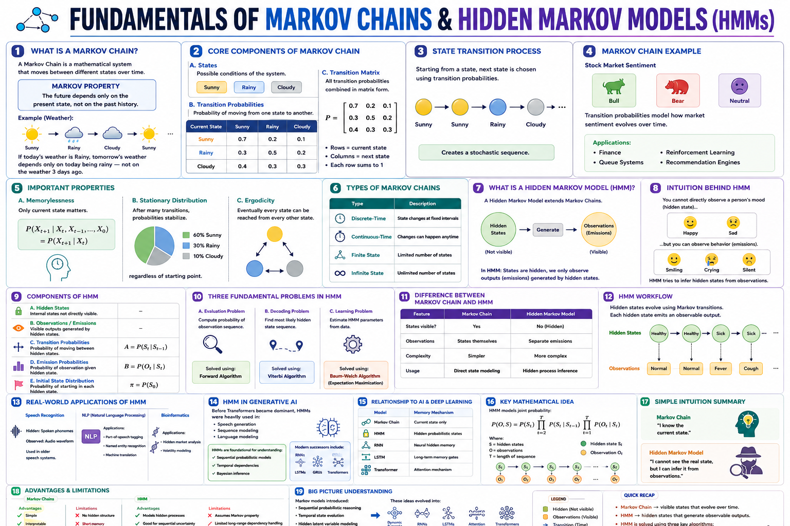

Mastering probabilistic sequence modeling — from Markov chains to HMMs and their role in generative AI
This study guide covers the foundational theory of Markov Models and Hidden Markov Models (HMMs), two cornerstones of probabilistic sequence modeling. You'll learn the Markov property, transition & emission matrices, the Forward–Backward algorithm, Viterbi decoding, and the Baum–Welch (EM) training procedure. We also explore how these concepts underpin modern Generative AI — from language modeling and text generation to sequence-to-sequence architectures and attention mechanisms. Built for the CGAI (Certified Generative AI) exam.

Hidden Markov Model: hidden states (S₁, S₂) with transitions (aᵢⱼ) and emission probabilities (bᵢ) to observations (O₁, O₂)
Every tunable knob in Markov and Hidden Markov Models — from the number of hidden states to convergence thresholds.
The cardinality of the latent state space. Too few states underfit; too many overfit and increase computational cost.
N = 4 # hidden states (e.g., noun, verb, adj, other)
How many previous states influence the next state. A 1st-order model depends only on the immediate predecessor.
k = 1 # 1st-order Markov (memory = 1 step)
An N×N stochastic matrix where A[i][j] = P(st+1=j | st=i). Each row must sum to 1.
A = np.array([[0.7, 0.3],
[0.4, 0.6]]) # row-stochastic
An N×M matrix where B[i][o] = P(observation=o | state=i). Maps hidden states to observable outputs.
B = np.array([[0.9, 0.1],
[0.2, 0.8]]) # N×M emission probs
A probability vector of length N representing P(s1=i) — the starting probabilities for each hidden state.
pi = np.array([0.6, 0.4]) # start probs
The number of distinct observable symbols. For text, this is the vocabulary size; for continuous data, it's the number of mixture components.
M = 5000 # vocabulary size for text HMM
The length of each observation sequence. HMM algorithms scale as O(N²T) for the Forward–Backward procedure.
T = 100 # observations per sequence
The minimum improvement in log-likelihood between EM iterations. Smaller ε gives more precise estimates but longer training.
epsilon = 1e-4 # EM convergence tolerance
Hard cap on the number of Baum–Welch (EM) iterations to prevent infinite loops if the model fails to converge.
max_iter = 200 # max Baum–Welch iterations
Laplace (add-α) smoothing to avoid zero probabilities in A and B. Essential for handling unseen transitions or emissions.
alpha_smooth = 0.01 # add-α pseudocount
The mathematical backbone of Markov and Hidden Markov Models — from the Markov property to the three canonical HMM problems.
1. Evaluation (Likelihood): Given λ and O, compute P(O|λ) — solved by Forward algorithm.
2. Decoding: Given λ and O, find the most likely S — solved by Viterbi algorithm.
3. Learning: Given O, estimate λ = (A, B, π) — solved by Baum–Welch (EM).
Markov Chain (MC): States are directly observable. Only A and π.
Hidden Markov Model (HMM): States are latent; observations are emitted. Adds B (emission matrix).
HMM → Gen AI: HMMs are the probabilistic ancestors of RNNs, LSTMs, and Transformers — all sequence models.
How HMMs are trained: the Baum–Welch algorithm (Expectation–Maximization), likelihood optimization, and practical training recipes.
The standard unsupervised learning algorithm for HMMs. Alternates between E-step (compute expected sufficient statistics using Forward–Backward) and M-step (re-estimate A, B, π).
# E-step: compute ξ (xi) and γ (gamma)
xi[t,i,j] = P(s_t=i, s_{t+1}=j | O, λ)
gamma[t,i] = P(s_t=i | O, λ)
# M-step: re-estimate parameters
A[i,j] = Σ_t xi[t,i,j] / Σ_t gamma[t,i]
B[i,o] = Σ_{t:o_t=o} gamma[t,i] / Σ_t gamma[t,i]
The dynamic programming backbone of the E-step. Forward (α) computes P(o₁…ot, st=i); Backward (β) computes P(ot+1…oT | st=i). Combined, they yield γ and ξ.
# Backward recursion
beta[T,i] = 1
beta[t,i] = Σ_j a[i,j] * b[j,o_{t+1}] * beta[t+1,j]
# State posterior
gamma[t,i] = alpha[t,i]*beta[t,i] / P(O|λ)
When state labels are available, parameters can be estimated directly via Maximum Likelihood Estimation (MLE) — simply count transitions and emissions.
# Direct MLE (labeled sequences) A[i,j] = count(i→j) / count(i) B[i,o] = count(i emits o) / count(i) pi[i] = count(seq starts in i) / num_seqs
To prevent floating-point underflow in long sequences, all probabilities are stored and computed in log-space. Products become sums; sums require the log-sum-exp trick.
# Log-sum-exp trick
def log_sum_exp(x):
m = np.max(x)
return m + np.log(np.sum(np.exp(x - m)))
# Log-space forward
log_alpha[t,i] = log_b[i,o_t] + log_sum_exp(
log_alpha[t-1,:] + log_a[:,i])
Techniques to prevent overfitting, handle sparsity, and improve generalization in Markov and Hidden Markov Models.
Adds a pseudocount α to every transition and emission count before normalization. The most fundamental regularizer for discrete HMMs.
# Smoothed MLE A[i,j] = (count(i→j) + α) / (count(i) + N*α) B[i,o] = (count(i emits o) + α) / (count(i) + M*α)
Place a Dirichlet prior over each row of A and B. The posterior mean yields a regularized estimate equivalent to pseudocount smoothing.
# Dirichlet prior on row i of A α_prior = np.ones(N) * 0.1 # weak symmetric prior A_posterior[i] = Dirichlet(α_prior + counts[i])
Remove or merge low-probability states and transitions to reduce model complexity. Useful when N is initially overestimated.
# Prune transitions below threshold A[A < threshold] = 0 # Re-normalize rows A = A / A.sum(axis=1, keepdims=True)
Treat the number of hidden states N as a hyperparameter and select it via k-fold cross-validation using held-out log-likelihood or perplexity.
# Grid search for optimal N
best_N, best_score = None, -np.inf
for N in [2, 3, 5, 8, 10, 15, 20]:
score = cross_val_hmm(N, folds=5)
if score > best_score:
best_N, best_score = N, score
A complete, annotated implementation of a Hidden Markov Model with Baum–Welch training, Forward algorithm, and Viterbi decoding — all in NumPy.
1import numpy as np
2from scipy.special import logsumexp
3class HiddenMarkovModel:
4 def __init__(self, n_states=4, n_obs=10,
max_iter=100, tol=1e-4, alpha_smooth=0.01):
5 self.N = n_states # hidden states
6 self.M = n_obs # observation vocabulary size
7 self.max_iter = max_iter # EM iteration cap
8 self.tol = tol # convergence threshold
9 self.alpha_smooth = alpha_smooth
10 def _init_params(self):
11 # Random initialization with row normalization
12 self.A = np.random.rand(self.N, self.N)
13 self.A /= self.A.sum(axis=1, keepdims=True)
14 self.B = np.random.rand(self.N, self.M)
15 self.B /= self.B.sum(axis=1, keepdims=True)
16 self.pi = np.random.rand(self.N)
17 self.pi /= self.pi.sum()
18 # ── Forward Algorithm (log-space) ──
19 def _forward(self, obs):
20 T = len(obs)
21 log_alpha = np.zeros((T, self.N))
22 # Base case
23 log_alpha[0] = np.log(self.pi + 1e-300) + np.log(self.B[:, obs[0]] + 1e-300)
24 # Recursion
25 for t in range(1, T):
26 for j in range(self.N):
27 log_alpha[t, j] = logsumexp(
28 log_alpha[t-1] + np.log(self.A[:, j] + 1e-300)
29 ) + np.log(self.B[j, obs[t]] + 1e-300)
30 # Total log-likelihood
31 self._log_likelihood = logsumexp(log_alpha[T-1])
32 return log_alpha
33 # ── Backward Algorithm (log-space) ──
34 def _backward(self, obs):
35 T = len(obs)
36 log_beta = np.zeros((T, self.N))
37 # Base case
38 log_beta[T-1] = 0.0
39 # Recursion
40 for t in range(T-2, -1, -1):
41 for i in range(self.N):
42 log_beta[t, i] = logsumexp(
43 np.log(self.A[i] + 1e-300) +
44 np.log(self.B[:, obs[t+1]] + 1e-300) +
45 log_beta[t+1]
46 )
47 return log_beta
48 # ── Baum–Welch (EM) ──
49 def fit(self, sequences):
50 self._init_params()
51 prev_ll = -np.inf
52 for iteration in range(self.max_iter):
53 # E-step: Accumulate expected counts
54 A_num = np.full((self.N, self.N), self.alpha_smooth)
55 A_den = np.full(self.N, self.N * self.alpha_smooth)
56 B_num = np.full((self.N, self.M), self.alpha_smooth)
57 B_den = np.full(self.N, self.M * self.alpha_smooth)
58 total_ll = 0
59 for obs in sequences:
60 log_alpha = self._forward(obs)
61 log_beta = self._backward(obs)
62 T = len(obs)
63 # γ (gamma): state posterior
64 log_gamma = log_alpha + log_beta - self._log_likelihood
65 gamma = np.exp(log_gamma)
66 # ξ (xi): transition posterior
67 for t in range(T-1):
68 log_xi = (log_alpha[t][:, None] +
69 np.log(self.A + 1e-300) +
70 np.log(self.B[:, obs[t+1]] + 1e-300) +
71 log_beta[t+1] - self._log_likelihood)
72 A_num += np.exp(log_xi)
73 A_den += gamma[:-1].sum(axis=0)
74 for t in range(T):
75 B_num[:, obs[t]] += gamma[t]
76 B_den += gamma.sum(axis=0)
77 total_ll += self._log_likelihood
78 # M-step: Re-estimate
79 self.A = A_num / A_den[:, None]
80 self.B = B_num / B_den[:, None]
81 self.pi = gamma[0] / gamma[0].sum() if sequences else self.pi
82 # Convergence check
83 if abs(total_ll - prev_ll) < self.tol:
84 print(f"Converged at iter {iteration+1}, LL={total_ll:.4f}")
85 break
86 prev_ll = total_ll
87 # ── Viterbi Decoding ──
88 def viterbi(self, obs):
89 T = len(obs)
90 log_delta = np.zeros((T, self.N))
91 psi = np.zeros((T, self.N), dtype=int)
92 log_delta[0] = np.log(self.pi + 1e-300) + np.log(self.B[:, obs[0]] + 1e-300)
93 for t in range(1, T):
94 for j in range(self.N):
95 scores = log_delta[t-1] + np.log(self.A[:, j] + 1e-300)
96 psi[t, j] = np.argmax(scores)
97 log_delta[t, j] = scores[psi[t, j]] + np.log(self.B[j, obs[t]] + 1e-300)
98 # Backtrack
99 best_path = np.zeros(T, dtype=int)
100 best_path[T-1] = np.argmax(log_delta[T-1])
101 for t in range(T-2, -1, -1):
102 best_path[t] = psi[t+1, best_path[t+1]]
103 return best_path1e-300 constants prevent log(0) errors in addition to the smoothing pseudocounts. For production use, consider using hmmlearn or pomegranate libraries.
A consolidated reference of all key concepts, hyperparameters, and their role in Generative AI.
| # | Hyperparameter | Symbol | Role | Typical Range |
|---|---|---|---|---|
| 1 | Number of Hidden States | N | Model capacity | 2 – 50 |
| 2 | Markov Order | k | Memory length | 1 – 3 |
| 3 | Transition Matrix | A | State dynamics | N×N stochastic |
| 4 | Emission Matrix | B | Observation mapping | N×M stochastic |
| 5 | Initial Distribution | π | Starting probabilities | 1×N stochastic |
| 6 | Observation Vocabulary | M | Output alphabet size | 100 – 100k |
| 7 | Sequence Length | T | Input length | 10 – 1000 |
| 8 | Convergence Threshold | ε | EM stopping criterion | 1e-6 – 1e-2 |
| 9 | Max EM Iterations | — | Training budget | 50 – 500 |
| 10 | Smoothing Pseudocount | α | Zero-probability avoidance | 1e-4 – 1.0 |
| Learned Parameters (from data) |
|---|
| Transition matrix A (N×N) |
| Emission matrix B (N×M) |
| Initial distribution π (N) |
| Gaussian means μi (if continuous) |
| Gaussian covariances Σi (if continuous) |
| State posterior γt(i) |
| Hyperparameters (set by user) |
|---|
| Number of hidden states N |
| Markov order k |
| Convergence threshold ε |
| Max EM iterations |
| Smoothing pseudocount α |
| Emission distribution type (categorical / Gaussian / GMM) |
| Application | How Markov/HMM is Used | Gen AI Connection |
|---|---|---|
| Language Modeling | N-gram models are Markov chains of order (n−1). P(wt | wt−1, …, wt−n+1) | Precursor to neural LMs; Markov assumption still used in efficient sampling (nucleus, top-k). |
| Text Generation | Markov chains generate text by sampling from learned transition probabilities. | Autoregressive decoding in GPT / LLMs follows a Markov-like step-by-step generation paradigm. |
| Part-of-Speech Tagging | HMM with hidden POS states and word emissions; Viterbi finds the optimal tag sequence. | Foundation for sequence labeling — evolved into BiLSTM-CRF and Transformer-based taggers. |
| Speech Recognition | HMMs model phoneme sequences with Gaussian emissions over acoustic features (MFCCs). | HMM-DNN hybrids dominated ASR before end-to-end models (Whisper, etc.). |
| Music Generation | Markov chains model chord progressions and melody transitions. | MuseNet / Music Transformer extend Markov ideas with attention for long-range dependencies. |
| Diffusion Models | The forward diffusion process is a Markov chain that gradually adds Gaussian noise. | DDPM (Denoising Diffusion Probabilistic Models) explicitly define a Markov chain x0 → x1 → … → xT. |
| State-Space Models | HMMs are discrete SSMs; modern SSMs like Mamba/S4 are continuous-state generalizations. | SSMs are emerging as efficient alternatives to Transformers for long-sequence Gen AI tasks. |
| Reinforcement Learning (RLHF) | MDPs (Markov Decision Processes) extend Markov chains with actions and rewards. | RLHF fine-tunes LLMs using MDP-based PPO, treating generation as a sequential decision process. |
| Feature | Markov Chain | Hidden Markov Model | Transformer (GPT) | Diffusion Model |
|---|---|---|---|---|
| States | Observable | Latent (hidden) | Continuous (embeddings) | Continuous (noisy) |
| Memory | Fixed order k | Implicit in state | Self-attention (unbounded) | Markov chain (fixed step) |
| Training | MLE (counting) | Baum–Welch (EM) | Gradient descent (BP) | Score matching |
| Generation | Sequential sampling | Viterbi + sampling | Autoregressive decoding | Iterative denoising |
| Complexity | O(k·N²·T) | O(N²·T) | O(T²·d) | O(K·d) per step |
| Interpretability | High (explicit probs) | High (inspectable A, B) | Low (black-box) | Medium (noise schedule) |
10 exam-style questions covering Markov chains, HMM fundamentals, algorithms, and Gen AI applications. Select the best answer for each.